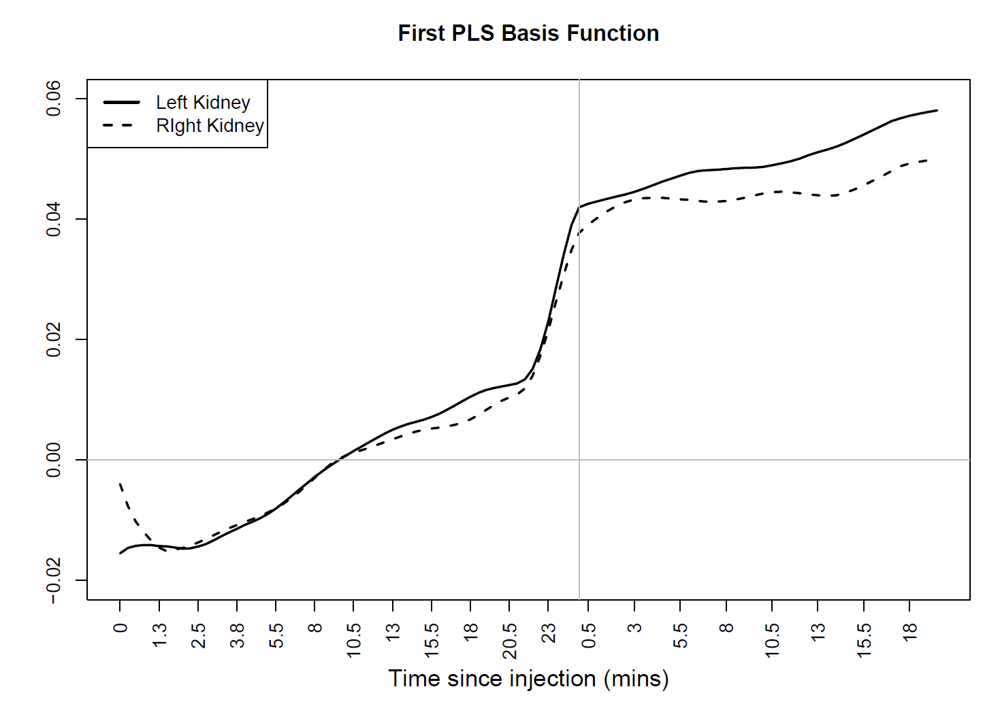
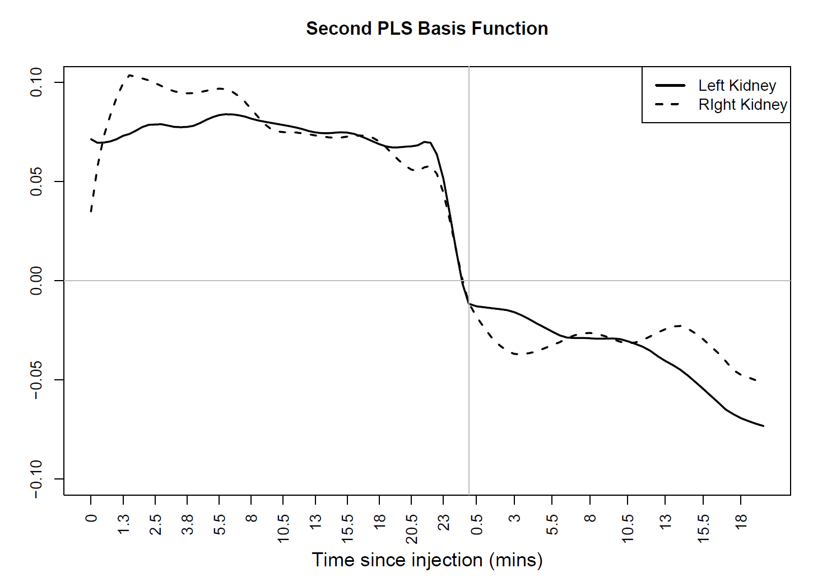

Point Process with Radionuclide Imaging Application
recent technological advancements have enabled the generation of increasingly complex data structures, such as medical images, which can significantly enhance disease diagnosis and improve outcomes in scientific research. For example, medical images developed using radioactive agents often produce data that can be viewed as realizations of point processes. Point process data is a realization of a random set of points in a specified space such as time, plane, or more complex domains. In particular, temporal point process data can be viewed as the recorded times at which events of interest occur. Common illustrative examples include arrival times of a patient to an emergency room and patient engagement with mobile phone-based telehealth applications.
Our motivating study involves a radionuclide imaging experiment in which subject-specific temporal point process data, photon detection times are collected to aid radiologists in interpreting potential kidney obstruction. In this imaging protocol, data acquisition begins immediately following the intravenous administration of the gamma-emitting radiotracer Technetium-99m mercaptoacetyltriglycine (99mTc-MAG3). This tracer is extracted from the bloodstream by the kidneys and then passes through the ureters to the bladder. As MAG3 travels through the kidneys, emitted photons are detected by a gamma camera, producing a sequence of arrival times of photons over the scanning period. Each subject underwent two scans, the first scan called "Baseline" and a second scan following an injection of furosemide, a diuretic, "Diuretic". The imaged photones are quantified for analysis by placing a region of interest (ROI) over each kidney. Following image acquisition, expert radiologists interpret the scans and assign a continuous score to each kidney, reflecting the degree of suspected obstruction. These scores range from -1 to 1, where values near 1 indicate high confidence in the presence of obstruction, while values near -1 suggest high confidence in the absence of obstruction. The objective of this study is to develop an interpretable predictive model that relates the temporal structure of photon arrival patterns to the degree of obstruction. Such a model aims to support clinical decision-making, particularly in settings where radiologists may have limited experience, by serving as a quantitative, data-driven second opinion to assist in the interpretation of kideny obstruction.
P3LS: Point Process Partial Least Squares
Towards the goal of fitting an interpretable predictive model for predicting a response of interest (degree of obstruction) based on a realization of a point process, we formulate a sensible model, via linear functional model which relates the response to the unobserved log-intensity functions of the underlying point process. In this work we developed a novel procedure that utilizes the properties of the log Gaussian Cox process (cf Moller et al. (1998)) to construct efficient estimators of these functional quantities, and represents the first extension of Partial Least Squares developed in Delaigle and Hall (2012) to incorporate log Gaussian Cox point process predictors. In addition, the empirical properties of the proposed method are examined in simulation studies. The method is used to analyze kidney functionality in patients with renal disease in order to aid in the diagnosis of kidney obstruction.
Top panel of the figure presented below illustrates the estimated coefficient function of the predictive model for both the left and right kidneys. For both kidneys, the estimated coefficient function is positive across all times for the diuretic renogram and negative across all times for the baseline renogram. It represents a contrast between diuretic and baseline renograms such that larger increases in diuretic log-intensities relative to baseline are associated with higher expected expert scores. Moreover, the estimated two basis functions, which are displayed in the bottom panel of the Figure presneted below, also represent contrasts and provide insight into parsimonious temporal renogram information that is predictive of obstruction.
More technical details of the formulation and estimation procedure along with simulation studies and details of data analysis can be found in the arXiv link of the manuscript.
1st PLS Basis Function
2nd PLS Basis Function
Future Work
Jointly, with a postdoctoral fellow at the Department of Biostatistics and Bioinformatics at Emory University, we are working on the following projects related to the renal study.
- Preprocessing of the imaging data involves manually placing a Rigon of Interest (ROI) on each image frame. we are developing a data deriven method of identifying the ROI and fitting an appropiriate predictive model.
- The gamma camera produces two dimensional images. Incorporateing the space-time point processes to build a predictive model is another line of work that is under investigation.
- In our motivating study, we analyzed the left and right kidneys separately, despite the fact that the data contains scans of both kidneys. An optimal analysis of the data needs to account for the dependence within and between the levels in a multilevel data. Extension of the P3LS method to multilavel point processes is under investigation.